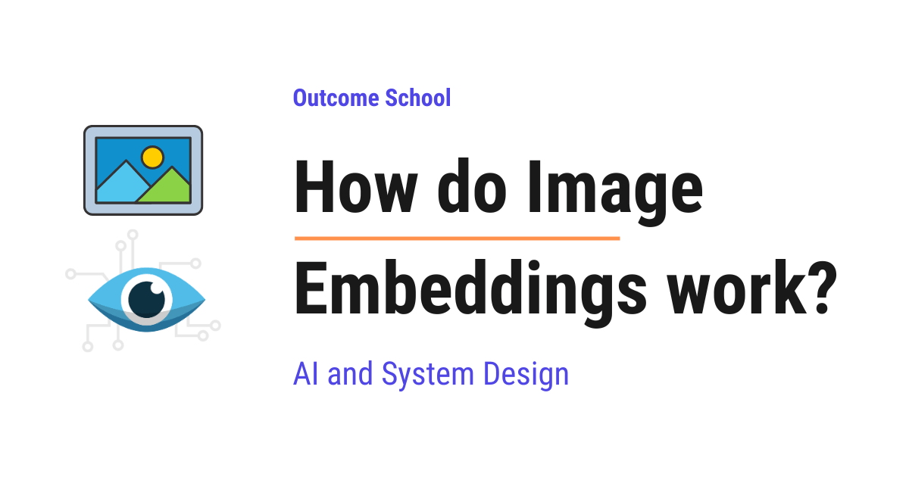
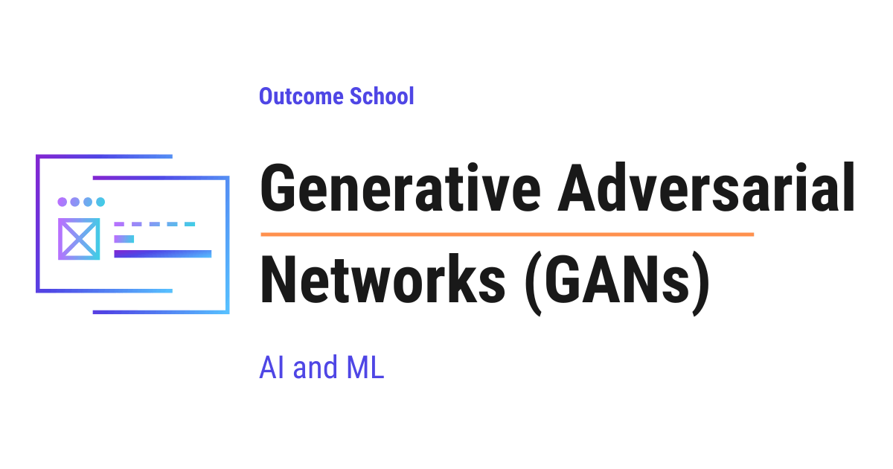

AI Engineering Course
Module 15
Multimodal AI and Generative Models
Personal offline study copy. Content © Outcome School / Amit Shekhar. Not for redistribution. See study/NOTICE.md.
Contents
- Module 15: Multimodal AI and Generative Models
- 15.1 What is Multimodal AI? How It Works and Where It Is Used
- 15.2 What is a Vision Transformer (ViT) and How Does It Work?
- 15.3 How do Image Embeddings work?
- 15.4 What are Diffusion Models and How Do They Generate Images?
- 15.5 What are Generative Adversarial Networks (GANs) and How Do They Work?
- 15.6 What are Variational Autoencoders (VAEs) and How Do They Work?
Module 15
Multimodal AI and Generative Models
In this module, we will learn how AI works with images and other types of data, and the generative models that create images from noise.
By the end of this module, we will know how models see images and how they generate new ones.
Lesson 15.1
What is Multimodal AI? How It Works and Where It Is Used
Multimodal AI is AI that can understand and generate more than one type of data at the same time. A single multimodal model can read text, see images, hear audio, and watch video, and then respond in any of these forms.
In this blog, we will learn about Multimodal AI, what it means, why it matters, how it works, and where we use it in the real world.
We will cover the following:
- The Big Picture
- What is a Modality?
- Unimodal AI vs Multimodal AI
- Why Multimodal AI?
- How Multimodal AI Works
- Three Common Types of Multimodal AI
- Real Examples of Multimodal AI
- Use Cases of Multimodal AI
- Common Mistakes to Avoid
- Quick Summary
Let's get started.
The Big Picture
For many years, AI models could only handle one type of data at a time. A text model could read text. An image model could see images. An audio model could listen to audio. Each model lived in its own small world, and these worlds did not talk to each other.
Multimodal AI breaks these walls.
In simple words:
Multimodal AI = AI that can understand and generate more than one type of data at the same time.
A single multimodal model can read text, see images, hear audio, and even watch video, all at once. Then it can respond in any of these forms.
Let's decompose the name:
Multimodal = Multi + Modal
Here, "Multi" means many, and "Modal" comes from "modality", which is just a fancy word for a type of data. So, Multimodal AI is simply AI that works with many types of data together.
The ability to create brand new content like this is what we call Generative AI, and we have a detailed blog on What is Generative AI? that explains it in depth.
What is a Modality?
Before going deeper, we must understand what a "modality" means.
Modality. A specific form or channel through which information reaches us.
In simple words, a modality is just a type of data.
Common modalities are:
- Text. Words, sentences, source code, articles, chat messages.
- Image. Photos, charts, diagrams, scanned documents.
- Audio. Speech, music, ringtones, machine sounds.
- Video. Moving images, often with sound, like films and reels.
- Other. Sensor data, depth maps, 3D shapes, biometric signals.
A human is a natural multimodal system. We see, we hear, we read, we touch, we smell, and we mix all of these signals into one understanding of the world. A doctor checking a patient is doing exactly this, every single day.
Multimodal AI tries to do the same.
Unimodal AI vs Multimodal AI
Let's understand the difference with a simple comparison.
Unimodal AI works with only one type of data.
For example:
- A spam classifier that reads only text.
- A face detector that sees only images.
- An image classifier that sees only images and tells if it is a cat or a dog.
Here, the output is just a label, a number, or a coordinate about the input. A label or a number is not a modality. The four modalities are text, image, audio, and video. So, even though the spam classifier prints the word "spam", it is not generating a piece of language - it is just attaching a tag to the input. The model is still unimodal.
Multimodal AI works with two or more types of data at the same time.
For example:
- A model that takes a photo and a question, and answers the question.
- A model that watches a video and writes a summary in text.
- A model that listens to a song and generates an album cover image.
Here is a simple picture of the difference:
Unimodal AI Multimodal AI
Text or Image or Audio Text Image Audio
(only one at a time) \ | /
| \ | /
v +-----v-----+
+-------+ | Model |
| Model | +-----------+
+-------+ |
| v
v Output
Output
Here, we can see that a unimodal model takes one type of input at a time, while a multimodal model takes many types of input together and produces one output.
Let me tabulate the differences between Unimodal AI and Multimodal AI for your better understanding so that you can decide which one to use based on your use case.
| Aspect | Unimodal AI | Multimodal AI |
|---|---|---|
| Inputs | One type (text or image or audio) | Two or more types together |
| Understanding | Limited to one sense | Combined across senses |
| Use cases | Narrow tasks | Rich, real-world tasks |
| Example | Sentiment analysis on tweets | "Describe this image" assistant |
| Cost | Lower | Higher |
Why Multimodal AI?
Now, the question is: why do we need Multimodal AI? The answer is simple - the real world is multimodal.
Let's say we walk into a doctor's clinic. The doctor:
- Reads our medical history (text).
- Looks at our X-ray (image).
- Listens to our heartbeat (audio).
- Watches how we walk (video).
The doctor combines all of these signals into one diagnosis. A doctor who could only read text would miss most of the picture.
The same is true for AI.
A model that can only read text cannot help us when we paste a screenshot of an error. A model that can only see images cannot answer a question about that image. A model that can only listen to audio cannot read the meeting notes that came along with the recording.
This is when Multimodal AI comes into the picture. By combining modalities, the model gets a much fuller view of the world, just like the doctor.
This is why Multimodal AI matters.
How Multimodal AI Works
At the core, every Multimodal AI system follows the same recipe.
The idea behind Multimodal AI is simple: convert every type of input into a common numeric form the model can understand, and then process all of them together.
Here is the high-level anatomy:
+-------+ +-------+ +-------+
| Text | | Image | | Audio |
+---+---+ +---+---+ +---+---+
| | |
v v v
+-------+ +-------+ +-------+
| Text | | Image | | Audio |
|Encoder| |Encoder| |Encoder|
+---+---+ +---+---+ +---+---+
| | |
+-----+------+------+-----+
|
v
+-----------+
| Shared |
| Embedding |
| Space |
+-----+-----+
|
v
+-----------+
| Multimodal|
| Model |
+-----+-----+
|
v
+-----------+
| Output |
| (text, |
| image, |
| audio) |
+-----------+
Let's decode each step. We will keep our doctor analogy from the previous section to make every part easy to follow.
1. Encoders for each modality.
A model cannot understand raw text, raw pixels, or raw sound waves directly. It only understands numbers. So, we need a way to turn each input into numbers.
Each type of input needs its own encoder. An encoder is a small model that turns raw data into a list of numbers, called a vector.
Just like our doctor uses eyes for X-rays, ears for the heartbeat, and reading skills for the notes, the multimodal model uses different encoders for different modalities.
- A Text Encoder turns words into vectors.
- An Image Encoder turns pixels into vectors. This often uses a Vision Transformer.
- An Audio Encoder turns sound waves into vectors.
These vectors are called embeddings. An embedding is just a vector that captures the meaning of the input in a form the model can use.
2. Shared Embedding Space.
Here is the key trick of Multimodal AI.
All the encoders are trained together so that their outputs land in the same vector space. The training pulls matching pairs (a photo of a cat and the word "cat") close to each other, and pushes mismatched pairs (a photo of a cat and the word "car") apart.
So a photo of a cat and the word "cat" end up close to each other in this space, even though one came from pixels and the other came from letters.
Let's see this with a simple picture:
Shared Embedding Space (simplified)
^
|
| "cat" * * cat photo
|
|
|
| "dog" * * dog photo
|
+----------------------------->
Here, we can see that the word "cat" and the photo of a cat sit near each other in the same space. Same for "dog" and the dog photo. The model now treats them as related, no matter the input type.
This shared space is what lets the model "compare" a photo to a sentence, or align a sound to a video frame. In our doctor analogy, this is the moment when the doctor combines the X-ray, the notes, and the heartbeat into one mental picture of the patient.
3. The Multimodal Model.
The shared embeddings are passed into a single model, usually a Transformer, which is a kind of neural network that learns relationships between pieces of data. The model can now reason across all the inputs at once.
For example, if we give the model a photo of a kitchen and ask "How many chairs are there?", the model looks at both the image embedding and the text embedding, and produces an answer.
Just like the doctor combines all the signals into one diagnosis, the multimodal model combines all the embeddings into one answer.
4. The Output.
The output can be text, image, audio, or even video, depending on the model and the task.
So, the recipe is: encode every modality → align them in a shared space → reason → generate.
Now, let's put this end to end with a quick example.
Step 1: We upload a photo of a kitchen and type the question "How many chairs are there?".
Step 2: The image encoder turns the photo into an image embedding. The text encoder turns the question into a text embedding.
Step 3: Both embeddings go into the multimodal model. The model looks at the image embedding and the text embedding together.
Step 4: The model produces the answer in text, for example "There are 4 chairs.".
This is how Multimodal AI works under the hood.
Three Common Types of Multimodal AI
Now that we have learned how Multimodal AI works, it is time to learn the three common patterns we see in the real world.
1. Multimodal Understanding.
The model takes inputs in many modalities and replies in one modality, often text.
For example, we send a photo and ask "What is in this image?", and the model replies in text. GPT-4V, Gemini, and Claude (with vision) follow this pattern.
2. Cross-Modal Generation.
The model takes input in one modality and produces output in another.
For example, text in, image out (DALL-E, Midjourney). Text in, video out (Sora, Veo). Audio in, text out (Whisper).
3. Cross-Modal Alignment.
The model places two or more modalities in the same shared embedding space so we can compare them directly.
For example, CLIP places text and images in a shared space, so we can search images using a text query.
Every multimodal model uses a shared embedding space inside it. In Cross-Modal Alignment, that shared space is itself the product. The model is trained mainly to build this space and to expose it, so we can compare or search across modalities directly, without going through a generated answer.
These three patterns cover most Multimodal AI systems we see today. Many real models mix two or more of these patterns together.
Real Examples of Multimodal AI
Now, let's put names to the three patterns. Here are some well-known multimodal models we may already know.
- GPT-4 with Vision (GPT-4V). Reads text and images, replies in text.
- GPT-4o. Reads text, images, and audio, and replies in text or audio in real time.
- Google Gemini. Reads text, images, audio, video, and code in one go.
- Claude (with vision). Reads text and images, answers in text.
- CLIP (Contrastive Language-Image Pretraining). Connects text and images in a shared embedding space.
- DALL-E and Midjourney. Take a text prompt and generate an image, powered by diffusion models.
- Whisper. Listens to audio and produces text.
- Sora and Veo. Take text and produce video.
Each of these is a real-world Multimodal AI system already in use today.
Use Cases of Multimodal AI
- Visual Question Answering (VQA). Upload a photo, ask a question, get an answer.
- Document Understanding. Read a PDF that has text, tables, and charts together.
- Medical Imaging. Combine X-rays, scans, and patient notes for better diagnosis.
- Self-Driving Cars. Mix camera, radar, and LIDAR (Light Detection and Ranging) data to drive safely.
- Accessibility. Describe images for people who cannot see them. Read text aloud for people who cannot read.
- Content Creation. Generate images, videos, and music from a simple text prompt.
- Customer Support. Let the user send a screenshot or a voice note instead of typing a long message.
- Education. Explain a diagram, solve a handwritten math problem, or read a textbook page aloud.
- Mobile Apps. Snap a photo of a foreign menu and get an instant translation, with the dish names spoken aloud.
This is how Multimodal AI is quietly changing the way we use computers.
Since these systems can now produce text, images, audio, and video that look completely real, we also need a way to check where a piece of content came from. We have a detailed blog on How Does LLM Watermarking Work? that explains how a hidden signal is placed inside generated content step by step.
Common Mistakes to Avoid
Let's look at a few common mistakes people make when thinking about Multimodal AI.
- Treating it as just "text + image". Multimodal means many modalities, not only two. Audio, video, sensor data, and 3D shapes also count.
- Assuming one model fits all. Some tasks still need a focused unimodal model. Multimodal is not always better.
- Ignoring data quality. A multimodal model is only as good as the alignment between its modalities. Bad pairings, like a wrong caption for a photo, lead to bad results.
- Forgetting cost. Multimodal models are heavier and slower than unimodal ones. We must use them where the extra signal is worth the cost.
- Skipping evaluation per modality. A model may be strong on text but weak on audio. We must test each modality on its own and also together.
- Mixing too many modalities at once. More modalities is not always better. Each new modality adds noise, latency, and risk. We must add a modality only when it brings clear value to the task.
- Forgetting about bias. Multimodal models can carry biases from each modality and from the training pairs. We must check the outputs for unfair patterns, just like we do for unimodal models.
Quick Summary
Let's recap what we have learned about Multimodal AI:
- Multimodal AI is AI that can handle more than one type of data, like text, image, audio, and video, together.
- A modality is just a type of data.
- Unimodal AI works with one type of data. Multimodal AI works with many types together.
- Real-world tasks are multimodal in nature, and Multimodal AI fits them better.
- Just like a doctor combines reports, X-rays, and heartbeats into one diagnosis, a multimodal model combines all the embeddings into one answer.
- The core recipe is: encode each modality → align in a shared space → reason → generate.
- The three common patterns are Multimodal Understanding, Cross-Modal Generation, and Cross-Modal Alignment.
- Models like GPT-4V, Gemini, Claude, CLIP, DALL-E, and Whisper are all examples of Multimodal AI.
Now, we have understood Multimodal AI.
Frequently Asked Questions
Is a spam classifier that outputs the word "spam" multimodal?
No. A spam classifier reads only text, and its output is just a label. A label or a number is not a modality. Even though it prints the word "spam", it is not generating a piece of language, it is only attaching a tag to the input.
Is Multimodal AI always better than Unimodal AI?
No. Some tasks still need a focused unimodal model. Multimodal models are heavier and slower than unimodal ones, so we must use them where the extra signal is worth the cost. More modalities also add noise, latency, and risk.
Does multimodal just mean text plus images?
No. Multimodal means many modalities, not only two. Audio, video, sensor data, depth maps, and 3D shapes also count. For example, a self-driving car mixes camera, radar, and LIDAR data to drive safely.
How does a model know that a photo of a cat and the word "cat" mean the same thing?
The encoders are trained together so that their outputs land in the same shared embedding space. The training pulls matching pairs, like a cat photo and the word "cat", close to each other, and pushes mismatched pairs apart. This shared space lets the model compare a photo to a sentence.
Is Whisper an example of Multimodal AI?
Yes. Whisper listens to audio and produces text. It follows the Cross-Modal Generation pattern, where the model takes input in one modality and produces output in another.
Lesson 15.2
What is a Vision Transformer (ViT) and How Does It Work?

A Vision Transformer (ViT) treats an image the same way a transformer treats a sentence. It splits the image into small patches, treats each patch as a token, and processes them with a transformer to classify the image.
In this blog, we will learn about the Vision Transformer (ViT) by decoding how it splits an image into patches, turns those patches into tokens, and processes them with a transformer to classify the image.
Before Vision Transformers, image classification was dominated by Convolutional Neural Networks (CNNs) like ResNet, VGG, and etc. The transformer architecture was only used for text. Then, in 2020, Google researchers asked a simple question - "Can we apply the transformer architecture directly to images?" The answer was yes, and the Vision Transformer (ViT) was born in the paper titled "An Image is Worth 16x16 Words".
When we hear "applying transformers to images", it sounds complex. But do not worry. If we break it down into its individual parts, every single piece is simple.
Our goal is to decode ViT so clearly that by the end, we will be able to explain how ViT works to anyone.
We will cover the following:
- The Big Picture
- Decoding Step 1: Splitting the Image into Patches
- Decoding Step 2: Patch Embedding
- Decoding Step 3: The CLS Token
- Decoding Step 4: Position Embeddings
- Decoding Step 5: The Transformer Encoder
- Decoding Step 6: The Classification Head
- Putting It All Together
- ViT vs CNN
- Quick Summary
Let's get started.
The Big Picture
Before we go into the details, let's understand the big picture.
ViT treats an image the same way a transformer treats a sentence. A sentence is a sequence of words (tokens). ViT splits an image into a sequence of small patches and treats each patch as a token. These patch tokens are then processed by a standard transformer encoder, just like text tokens.
In simple words:
Vision Transformer = Split image into patches (like words) + Process patches with a transformer (like processing a sentence).
Think of a jigsaw puzzle. We take a complete image, cut it into small square pieces, line up the pieces in a row, and hand them to the transformer. The transformer then looks at all the pieces together, understands how they relate to each other, and tells us what the image is.
The idea behind ViT is simple - if transformers work well for sequences of text tokens, they should also work for sequences of image patches.
A sentence like "the cat sat on the mat" is a sequence of 6 tokens. In the same way, an image becomes a sequence of patches. For example, a 224x224 image cut into 16x16 patches gives us 196 patches. Each patch is treated as a "visual word". The transformer does not care whether the tokens are words or image patches. It just processes the sequence and learns the relationships.
Now, let's decode ViT step by step.
Decoding Step 1: Splitting the Image into Patches
The first thing ViT does is split the input image into small non-overlapping square patches.
First, we take the input image. A standard ViT uses 224x224 pixel images. Then, we divide the image into non-overlapping square patches, each of size 16x16 pixels. Since 224 / 16 = 14, we get 14 patches along each side of the image. So the image becomes a 14 x 14 grid of patches, which gives us 14 x 14 = 196 patches in total.
Think of it like a chessboard, but with 14 rows and 14 columns instead of 8. Each square of this 14 x 14 board is one patch.
Now, a natural question arises - why 16x16? It is a sweet spot. Smaller patches (say 8x8) give us more tokens and finer detail, but the sequence length grows quickly and self-attention becomes very expensive. Bigger patches (say 32x32) give us fewer tokens and faster training, but the model loses fine-grained detail. 16x16 balances both, and that is why it became the default.
Original Image (224 x 224 pixels)
+----+----+----+----+----+ ... +----+
|P1 |P2 |P3 |P4 |P5 | |P14 |
+----+----+----+----+----+ ... +----+
|P15 |P16 |P17 |P18 |P19 | |P28 |
+----+----+----+----+----+ ... +----+
| | | | | | | |
... ... ... ... ... ...
+----+----+----+----+----+ ... +----+
|P183|P184|P185|P186|P187| |P196|
+----+----+----+----+----+ ... +----+
Each patch is 16 x 16 pixels
Total: 14 x 14 = 196 patches
Each patch captures a small region of the image. Some patches contain parts of the main object, some contain background, and some contain edges or textures.
This is how the image is broken down into a sequence. Now, let's move to the next step.
Decoding Step 2: Patch Embedding
Now, we have 196 patches. But the transformer does not understand raw pixels. It expects each token to be a fixed-size vector of numbers, called an embedding.
Each patch is a 16x16 pixel region with 3 color channels (RGB). So each patch is a small 3D block of 16 x 16 x 3 = 768 numbers, which is then flattened into a single vector of 768 numbers.
To turn each patch into a token that the transformer can process, we use a linear projection - a simple matrix multiplication that converts these 768 numbers into a vector of a fixed dimension (768 for ViT-Base). Even though the input and output dimensions are the same here, this is not an identity mapping. The projection matrix is learned during training so that the output embedding captures the useful visual features of the patch, not just raw pixel values.
Patch (16 x 16 x 3, a 3D block of pixels)
|
v
[Flatten into a 768-dimensional vector]
|
v
[Linear Projection (768 -> 768)]
|
v
Patch Embedding (768-dimensional vector)
In practice, this linear projection is implemented as a convolution with kernel size 16x16 and stride 16. Do not worry if this sounds heavy. It is just an implementation detail, not a new concept - it is mathematically the same as cutting the image into 16x16 patches and projecting each one.
After this step, we have 196 patch embeddings, each of dimension 768. This is our sequence of "visual tokens", ready for the transformer.
This was all about converting patches to embeddings. Now, let's decode the next piece.
Decoding Step 3: The CLS Token
Now, a natural question arises - once the transformer has processed all 196 patch tokens, which token do we use to make the final prediction? Each patch only sees a small part of the image, so no single patch token fully represents the whole image.
The answer is simple: we add a special learnable token called the CLS token (short for "classification token") to the beginning of the sequence.
Sequence: [CLS, Patch1, Patch2, Patch3, ..., Patch196]
Total tokens: 197 (1 CLS + 196 patches)
The CLS token does not correspond to any image patch. It starts as a learnable vector of 768 numbers. As the transformer processes the sequence, the CLS token attends to every patch and gathers information from all of them. By the end of the transformer, the CLS token contains a global summary of the entire image.
Think of the CLS token as a class representative. Every patch is like a student in a classroom. The CLS token listens to all the students, collects their information, and speaks on behalf of the whole class when the final answer is needed.
Now, let's decode the next piece.
Decoding Step 4: Position Embeddings
Here is the catch. When we split the image into patches and line them up as a sequence, the patches lose their spatial position. The transformer only sees a list of tokens. It does not know which patch was on the top-left and which was on the bottom-right.
But the position of a patch matters. A patch containing an eye on the top of the image and a patch containing a tail on the bottom together tell us it is a cat. If we shuffle the patches randomly, the image no longer makes sense.
So, here comes the position embedding to the rescue. For each position in the sequence (0 to 196), we add a learnable vector of 768 numbers. This vector acts like a tag that tells the transformer, "This patch came from position 5 in the original image."
Final input = Patch Embedding + Position Embedding
Token 0: CLS_embedding + Position_0
Token 1: Patch1_embedding + Position_1
Token 2: Patch2_embedding + Position_2
...
Token 196: Patch196_embedding + Position_196
The position embedding is simply added (element-wise) to the patch embedding. Now every token carries both "what" the patch looks like and "where" it was in the image.
Now, our sequence of 197 tokens is ready for the transformer. Let's move to the next step.
Decoding Step 5: The Transformer Encoder
The sequence of 197 tokens (CLS + 196 patches) is passed through a standard transformer encoder. We must be knowing how a transformer encoder works from text models - the same one comes into the picture here.
We have a detailed blog on Decoding Transformer Architecture that explains the transformer encoder in depth.
The encoder consists of multiple layers, and each layer contains three main components.
1. Multi-Head Self-Attention: Each token attends to every other token. This allows the model to learn relationships between different parts of the image. For example, a patch containing a cat's ear can attend to a patch containing a cat's eye, helping the model understand that they belong to the same object. This is the heart of ViT.
2. Feed-Forward Network: A two-layer neural network applied to each token independently. This adds non-linearity and increases the model's capacity. We have a detailed blog on Feed-Forward Networks in LLMs that explains this in depth.
3. Layer Normalization and Residual Connections: Standard transformer components that help with training stability.
Input: 197 tokens (each 768-dimensional)
|
v
[Layer 1: Multi-Head Self-Attention -> Feed-Forward Network]
|
v
[Layer 2: Multi-Head Self-Attention -> Feed-Forward Network]
|
v
... (12 layers in total)
|
v
Output: 197 tokens (each 768-dimensional)
After all the layers, each token has been enriched with information from all other tokens. The CLS token, in particular, has gathered information from all 196 patches and now contains a global representation of the entire image.
This is how the transformer encoder processes our sequence of visual tokens. Now, let's move to the final step.
Decoding Step 6: The Classification Head
The final CLS token representation is passed through a classification head, which is a simple linear layer that maps the 768-dimensional vector to the number of classes.
CLS token output (768-dimensional)
|
v
[Linear Layer (768 -> 1000)]
|
v
Class probabilities (1000 classes)
|
v
Prediction: "Golden Retriever" (class with highest probability)
The class with the highest probability is the model's prediction. It works perfectly.
Now, we have decoded every piece of ViT. Let's put them all together to see how ViT runs end to end.
Putting It All Together
Let's trace through the entire ViT pipeline end to end with concrete numbers for ViT-Base:
Input image (224 x 224 x 3 RGB)
|
v
[Step 1: Split into 14 x 14 = 196 patches of 16 x 16]
|
v
[Step 2: Patch embedding -> 196 vectors, each 768-dim]
|
v
[Step 3: Prepend CLS token -> 197 vectors, each 768-dim]
|
v
[Step 4: Add position embeddings -> 197 vectors, each 768-dim]
|
v
[Step 5: Transformer encoder (12 layers, 12 heads each)]
|
v
[Step 6: Take CLS token -> Linear (768 -> 1000)]
|
v
Prediction: "Golden Retriever"
Total parameters for ViT-Base: ~86 million.
ViT comes in three standard sizes - ViT-Base (~86M parameters, 12 layers), ViT-Large (~307M parameters, 24 layers), and ViT-Huge (~632M parameters, 32 layers). The bigger the model, the more data it needs to train well, but the better it performs once trained.
This is the complete flow of ViT from an input image to a final prediction.
ViT vs CNN
Now, a natural question arises - how does ViT compare to CNNs, which have been the standard for image classification for years?
Let me tabulate the differences between ViT and CNN for your better understanding so that you can decide which one to use based on your use case.
| Property | ViT | CNN (e.g. ResNet) |
|---|---|---|
| Core operation | Self-attention | Convolution |
| What each layer sees | The whole image from the very first layer | Only nearby pixels at first, more with depth |
| Built-in assumptions | Almost none, learns everything from data | Strong, assumes nearby pixels are related |
| Data requirement | Needs large datasets | Works with smaller datasets |
| Scalability | Scales well with data and compute | Scales, but less steeply at very large scale |
| Architecture | Uniform (same attention blocks) | Varied (different block types) |
| Image understanding | Understands global relationships | Understands local patterns first |
CNNs come with a built-in assumption that nearby pixels are more related than distant pixels. This assumption acts like a head start - the CNN does not have to learn this from scratch. ViT does not have this head start. It learns all spatial relationships from the data itself. This is why ViT needs more data to train well, but once trained on enough data, it can outperform CNNs because it is not limited by any built-in assumption.
Let's put this into perspective with real numbers:
- When trained only on ImageNet (~1.3 million images), ViT performs worse than a well-tuned ResNet of similar size.
- When pre-trained on JFT-300M (~300 million images) and then fine-tuned on ImageNet, ViT beats the best CNNs of the time.
- The lesson is simple - more data, more ViT wins. With small data, CNNs win because of their built-in head start.
Quick Summary
In one line:
ViT = image patches + transformer encoder.
Let's recap what we have decoded:
- Vision Transformer (ViT) applies the transformer architecture to images by treating image patches as tokens, just like words in a sentence.
- The process is - split the image into 16x16 patches, project each patch into an embedding, add a CLS token and position embeddings, process through a transformer encoder, and use the CLS token for classification.
- Patch embedding converts each 16x16x3 patch into a 768-dimensional vector using a linear projection.
- The CLS token aggregates information from all patches and is used for the final classification.
- Position embeddings tell the transformer where each patch came from in the original image.
- The transformer encoder uses multi-head self-attention so every patch can attend to every other patch, learning global relationships from the very first layer.
- ViT vs CNN: ViT looks at the whole image from the very first layer, while CNNs look at nearby pixels first. ViT needs more data but scales better.
- ViT has become the foundation for many modern vision models, including CLIP, DINO, self-supervised methods like I-JEPA, and the vision encoders used in multimodal models.
So we have learned about the Vision Transformer (ViT), how it splits an image into patches, processes them with a transformer encoder, and uses the CLS token to make the final prediction. We have also seen how ViT compares to CNNs and why it scales so well with more data.
Frequently Asked Questions
Does ViT work well on small datasets?
No. ViT needs large datasets to train well. When trained only on ImageNet, which has about 1.3 million images, ViT performs worse than a well-tuned ResNet of similar size. CNNs win with small data because they assume nearby pixels are related, which gives them a head start.
Why does ViT use 16x16 patches?
16x16 is a sweet spot between detail and cost. Smaller patches give more tokens and finer detail, but the sequence grows quickly and self-attention becomes very expensive. Bigger patches give fewer tokens and faster training, but the model loses fine-grained detail. That is why 16x16 became the default.
Does ViT use a transformer decoder?
No. ViT uses a standard transformer encoder, the same one used for text tokens. The encoder lets every patch attend to every other patch. The final CLS token is then passed through a simple linear classification head to make the prediction.
Does ViT know where each patch came from in the image?
Only because of position embeddings. When the patches are lined up as a sequence, they lose their spatial position, so a learnable position vector is added to each patch embedding. Without it, the transformer would not know which patch was on the top-left and which was on the bottom-right.
Which modern models are built on ViT?
ViT has become the foundation for many modern vision models. These include CLIP, DINO, self-supervised methods like I-JEPA, and the vision encoders used in multimodal models.
Lesson 15.3
How do Image Embeddings work?

An image embedding is a list of numbers that represents the meaning of an image. A model converts the image into these numbers, and similar images get similar numbers, so the computer can compare them easily.
In this blog, we will learn about how image embeddings work. We will also see why we need image embeddings, how a computer turns a picture into numbers, how we measure the similarity between two of them, and where they are used in the real world.
We will cover the following:
- What is an embedding?
- What is an image embedding?
- Why do we need image embeddings?
- How does a computer see an image?
- How are image embeddings created?
- A simple numeric walkthrough
- How do we measure similarity between two embeddings?
- A code example
- Where are image embeddings used?
- Summary
Let's get started.
What is an embedding?
An embedding is a list of numbers that represents the meaning of something.
In simple words, an embedding turns a real-world thing into a group of numbers. These numbers capture what the thing actually means.
Let's say we have a word, a sentence, or an image. A computer cannot understand any of these directly. A computer only understands numbers. So, we convert the thing into a list of numbers. That list of numbers is called an embedding.
This list of numbers is also called a vector. A vector is just a fixed-size list of numbers, like [0.21, 0.87, 0.05, 0.64].
So, here is the simple idea:
An embedding is a list of numbers that captures the meaning of something.
Now, we have understood what an embedding is. It is time to learn about what an image embedding is.
What is an image embedding?
An image embedding is a list of numbers that represents the meaning of an image.
In simple words, we take an image, and we convert it into a list of numbers. That list of numbers captures what is inside the image.
Let's say we have a photo of a cat. We pass this photo through a special model. This model gives us back a list of numbers, something like [0.91, 0.12, 0.77, 0.03, ...]. This list of numbers is the image embedding of the cat photo.
The most important point is this:
Two images that look similar in meaning will have embeddings that are close to each other.
So, the embedding of one cat photo will be close to the embedding of another cat photo. But the embedding of a cat photo will be far from the embedding of a car photo.
This is the whole magic of image embeddings. Similar images give similar numbers. Different images give different numbers.
This was all about what an image embedding is. Now, the question is, why do we even need it.
Why do we need image embeddings?
Let's say we are building an app like Google Photos. We have one million photos stored. Now, a user types "beach" in the search box. We must show all the beach photos.
But here is the catch. The photos do not have any labels. Nobody has written "beach" under each photo. So, how do we find the beach photos?
We cannot compare the raw photos pixel by pixel. That is slow, and it does not understand meaning. Two beach photos taken at different angles look completely different at the pixel level, but they mean the same thing.
So, here comes the image embedding into the picture.
We convert every photo into an embedding. We convert the word "beach" into an embedding too. Then we simply find the photo embeddings that are closest to the "beach" embedding. Those are our beach photos.
This way we can use image embeddings to solve the interesting problem of searching images by meaning, not by exact pixels.
Finding the closest embeddings quickly across millions of photos is exactly what a vector database is built for. We have a detailed blog on how a Vector Database works that explains this end to end.
Now, the next big question is, how does a computer even see an image in the first place.
How does a computer see an image?
Before jumping into embeddings, we must know how a computer reads an image.
An image is made up of tiny dots called pixels. A pixel is the smallest dot of color in an image. When we zoom into any photo a lot, we start seeing these small square dots. Each dot is a pixel.
Each pixel is stored as numbers. For a color image, every pixel has three numbers, one for red, one for green, and one for blue. Each of these numbers usually goes from 0 to 255.
So, for the sake of understanding, a small image of 100 by 100 pixels has 100 multiplied by 100, which is 10,000 pixels. And each pixel has 3 color numbers. So, the full image is 10,000 multiplied by 3, which is 30,000 numbers.
We can picture a single pixel as below:
One pixel
|
v
+---------+
| pixel |
+---------+
/ | \
v v v
Red Green Blue
210 180 90
(each value goes from 0 to 255)
Here, we can see that one single pixel is stored as three numbers, one for red, one for green, and one for blue. Every pixel in the image is stored in this same way, so the full image becomes a very big list of these color numbers.
This is the raw image. It is just a big list of color numbers.
But here is the problem. These raw numbers only tell us the color of each dot. They do not tell us the meaning. They do not tell us "this is a cat". Two cat photos can have totally different raw numbers because of lighting, angle, and background.
So, we need to convert these raw color numbers into meaningful numbers. Those meaningful numbers are the image embedding.
Note: The raw pixels tell us how the image looks. The embedding tells us what the image means. This difference is the heart of the whole topic.
Now that we understand raw pixels, it is time to learn how the embedding is actually created.
How are image embeddings created?
Image embeddings are created using a neural network.
In simple words, a neural network is a model that learns patterns from examples. We do not write rules for it by hand. Instead, we show it many examples, and it learns on its own.
For images, we use a special type of neural network called a CNN, which stands for Convolutional Neural Network. We can also use a newer type called a Vision Transformer. Do not worry about the exact names. The idea behind both is the same.
Let's understand the idea with a simple analogy.
Suppose a child has never seen a cat. We show the child thousands of cat photos. Slowly, the child learns the pattern. Cats have pointy ears, whiskers, fur, and a tail. Now the child can recognize a cat even in a brand new photo.
A neural network learns in the same way. We show it millions of photos. It slowly learns the patterns, like edges, shapes, ears, eyes, and textures.
Here is how it works step by step.
Step 1: The raw image, which is a big list of color numbers, goes into the neural network.
Step 2: The first layers of the network look for very simple patterns, like edges and corners.
Step 3: The next layers combine these simple patterns into bigger patterns, like an eye, an ear, or a wheel.
Step 4: The deeper layers combine these into full objects, like a full cat face or a full car.
Step 5: Near the end, the network produces a short list of numbers that summarizes everything it found in the image. This short list of numbers is the image embedding.
Let's visualize this flow as below:
Raw image
(color numbers)
|
v
+-----------------+
| Early layers | finds edges and corners
+-----------------+
|
v
+-----------------+
| Middle layers | finds parts (eye, ear, wheel)
+-----------------+
|
v
+-----------------+
| Deep layers | finds full objects (cat, car)
+-----------------+
|
v
+-----------------+
| Final layer | summarizes everything found
+-----------------+
|
v
Embedding
[0.91, 0.12, 0.77, ...]
Here, we can see that the raw image enters at the top, and each layer of the network understands a little more than the layer before it. The early layers see only simple edges, the middle layers see parts, and the deep layers see full objects. At the very end, the network turns all of this understanding into a short list of numbers, which is the image embedding.
So, the embedding is the network's summary of the meaning of the image.
Let me map this flow to our child analogy for your better understanding:
| In the neural network | In the child analogy |
|---|---|
| Raw image (color numbers) | Looking at the photo with eyes |
| Early layers finding edges | Noticing simple lines and corners |
| Middle layers finding parts | Noticing ears, eyes, and whiskers |
| Deep layers finding objects | Recognizing the full cat |
| Final embedding | The understanding "this is a cat" |
The best part is this. After the network is trained on millions of images, it learns to place similar images close together in the number space. This happens automatically during training, and that too without us writing any rule for it.
Now, we have understood how embeddings are created. The best way to learn this further is by taking a simple numeric example.
A simple numeric walkthrough
Let's say, just for the sake of understanding, that our embedding has only 3 numbers. In real life, an embedding has hundreds or even thousands of numbers, but 3 numbers are enough to learn the idea.
Assume that we have three photos. We pass each photo through the neural network, and we get the following embeddings:
- Cat photo A:
[0.90, 0.10, 0.05] - Cat photo B:
[0.88, 0.12, 0.07] - Car photo C:
[0.10, 0.95, 0.85]
Here, we can notice something very important. The two cat photos, A and B, have very similar numbers. The car photo C has very different numbers.
We can picture where these embeddings sit as below:
Number space
Cat A Cat B
(.) (.) <-- close together
(.) Car C <-- far away
Here, we can see that the embedding of Cat A and the embedding of Cat B land very close to each other because they mean the same thing. The embedding of Car C lands far away because it means something different. This is exactly how a computer keeps similar images near each other and different images apart, using only numbers.
This is exactly what we wanted. Similar meaning gives similar numbers. Different meaning gives different numbers.
So, if we ask the computer "which photo is most similar to Cat photo A", the computer will compare the numbers and answer "Cat photo B". It will not pick the car photo, because its numbers are far away.
This is how a computer understands the meaning of images using only numbers.
Now, the question is, how exactly does the computer measure that two lists of numbers are close or far. Let's understand that now.
How do we measure similarity between two embeddings?
To find how similar two embeddings are, we measure the distance between them.
In simple words, if two lists of numbers are close to each other, the images are similar. If they are far apart, the images are different.
The most common method to measure this is called cosine similarity.
In simple words, cosine similarity checks whether two lists of numbers point in the same direction. If they point in the same direction, the similarity is high. If they point in different directions, the similarity is low.
The cosine similarity value goes from -1 to 1.
- A value close to 1 means the two images are very similar.
- A value close to 0 means they are not related.
- A value close to -1 means they are opposite.
Let's take our earlier example. Cat photo A is [0.90, 0.10, 0.05] and Cat photo B is [0.88, 0.12, 0.07]. These two point in almost the same direction, so the cosine similarity will be very close to 1. This tells us they are very similar.
This is how we find similar images using their embeddings.
Now that we have learned the theory, it is time to see a small code example.
A code example
Let's see the code for creating an image embedding and comparing two images. We will use Python, which is the most common language for machine learning.
First, we load a ready-made model and create embeddings for two images as below:
from sentence_transformers import SentenceTransformer
from PIL import Image
# Load a ready-made model that can create image embeddings
model = SentenceTransformer("clip-ViT-B-32")
# Open two images from our computer
cat_image = Image.open("cat.jpg")
dog_image = Image.open("dog.jpg")
# Convert each image into an embedding (a list of numbers)
cat_embedding = model.encode(cat_image)
dog_embedding = model.encode(dog_image)
print(cat_embedding.shape)
Here, we have done a few simple things.
- We loaded a ready-made model called
clip-ViT-B-32. This model already knows how to turn images into embeddings, so we do not have to train anything ourselves. - We opened two image files, one cat and one dog.
- We called
model.encode()on each image. This gives us back the embedding, which is the list of numbers.
This will print the following:
(512,)
Here, we can see that each embedding is a list of 512 numbers. So, this model summarizes the full image into 512 meaningful numbers.
Now, let's compare these two embeddings to see how similar the images are as below:
from sentence_transformers import util
# Measure how similar the two embeddings are
similarity = util.cos_sim(cat_embedding, dog_embedding)
print(similarity)
Here, we have used cos_sim, which calculates the cosine similarity between the two embeddings. It tells us how close the two images are in meaning.
A cat and a dog are both animals, so the value will be somewhat high. If we compared a cat with a car instead, the value would be much lower, because a cat and a car are very different in meaning.
This is how, with only a few lines of code, we can convert images into numbers and compare their meaning. It works perfectly.
Note: The same clip-ViT-B-32 model can also turn a word like "beach" into an embedding. So, we can compare a word embedding with image embeddings, and that is exactly how searching photos by typing words works.
Models that connect text and images in the same embedding space like this are called multimodal models. We have a detailed blog on Multimodal AI that explains how it works.
Now, we have understood the full flow. Let's see where image embeddings are used in real life.
Where are image embeddings used?
Image embeddings are used in many products that we use every day. Here are a few real use cases:
- Image search: We search for photos by typing words like "beach" or "birthday", and the app finds matching photos by comparing embeddings.
- Similar product search: On shopping apps, we upload a photo of a shoe, and the app shows similar shoes by comparing embeddings.
- Duplicate photo detection: The phone gallery groups similar or duplicate photos together by comparing their embeddings.
- Face grouping: Photo apps group all photos of the same person together using embeddings.
- Recommendation systems: Apps recommend images or videos similar to the ones we liked, using embeddings.
So, now we know where we can use image embeddings.
Summary
Let's quickly recap everything in simple words.
A computer cannot understand an image directly. It only understands numbers. The raw image is just a big list of color numbers, and these raw numbers do not capture meaning.
So, we pass the image through a neural network. The network summarizes the image into a short list of meaningful numbers. This list of numbers is the image embedding.
Similar images get similar embeddings, and different images get different embeddings. We measure how similar two embeddings are using cosine similarity. This lets us search, group, and compare images by their meaning, not by their exact pixels.
This is how image embeddings work. They turn pictures into numbers that carry meaning, and that too in a way a computer can compare very easily.
Frequently Asked Questions
Why can't we just compare raw pixels to find similar images?
Raw pixels only tell us the color of each dot, not the meaning of the image. Two cat photos can have totally different raw numbers because of lighting, angle, and background. Comparing pixel by pixel is also slow. An embedding captures what the image means, so similar images end up close to each other.
Can we search images using a text query?
Yes. A model like clip-ViT-B-32 can turn both images and a word like "beach" into embeddings in the same space. We then compare the word embedding with the image embeddings and pick the closest ones. Models that connect text and images in the same embedding space like this are called multimodal models.
Do we need to train our own model to create image embeddings?
No. We can load a ready-made model like clip-ViT-B-32, which already knows how to turn images into embeddings. With just a few lines of Python, we can encode images with model.encode() and compare them with cosine similarity, without training anything ourselves.
How many numbers are there in an image embedding?
In real life, an image embedding has hundreds or even thousands of numbers. For example, the clip-ViT-B-32 model summarizes a full image into a list of 512 numbers. Small examples with only 3 numbers are used just to understand the idea.
Do photos need labels to be searchable with image embeddings?
No. Photos do not need anyone to write labels like "beach" under them. We convert every photo into an embedding and the search word into an embedding too. Then we find the photo embeddings closest to the search embedding, which lets us search images by meaning.
Lesson 15.4
What are Diffusion Models and How Do They Generate Images?

A Diffusion Model is a type of AI model that creates new data, such as images, by starting from pure random noise and slowly cleaning it up step by step until a clear image appears.
In this blog, we will learn about Diffusion Models. We will understand what they are, why we need them, how they work step by step, and how they generate amazing images like the ones we see in tools such as DALL-E, Stable Diffusion, and Midjourney.
We will cover the following:
- What is a Diffusion Model?
- Why do we need Diffusion Models?
- The two processes: Forward and Reverse
- The Forward Process (adding noise)
- The Reverse Process (removing noise)
- A step-by-step example walk-through
- How the model is trained
- A simple code example
- Conditional Diffusion (text to image)
- Advantages of Diffusion Models
- Where Diffusion Models are used
Let's get started.
What is a Diffusion Model?
A Diffusion Model is a type of AI model that learns to create new data, such as images, by starting from pure random noise and slowly cleaning it up step by step until a clear image appears.
In simple words, a Diffusion Model learns how to turn noise into something meaningful.
So, where does the name come from? The word diffusion means spreading out, like a drop of ink spreading slowly in water until it mixes everywhere. A Diffusion Model first spreads noise into an image until the image is destroyed, and then learns to reverse this spreading to bring the image back.
So, what is noise? Noise is just random dots, like the static we see on an old television screen when there is no signal. It carries no meaning. It is pure randomness.
Now, the magic is this: a Diffusion Model takes this meaningless noise and gradually transforms it into a beautiful, meaningful image, one small step at a time.
Let's say we have a screen full of random dots. The Diffusion Model looks at it and removes a little bit of the randomness. Then it looks again and removes a little more. It keeps repeating this until a clear picture of, for example, a cat appears.
That is the core idea of a Diffusion Model.
Diffusion Models are one family inside the bigger world of Generative AI, and we have a detailed blog on What is Generative AI? that explains the whole idea from the ground up.
Why do we need Diffusion Models?
The best way to learn this is by understanding the problem.
We want computers to create new images, new art, new designs, and new pictures that have never existed before. This is called image generation.
So, the question is: how can a computer create a brand new image from scratch?
This is a very hard problem. An image is made of millions of pixels, and every pixel must have the right color and the right place. If even a few pixels are wrong, the image looks broken and unrealistic.
Before Diffusion Models, we used models called GANs, which stands for Generative Adversarial Networks. GANs were powerful, but they were very hard to train. They were unstable, which means they often failed to learn properly, and sometimes they produced the same image again and again.
We needed a solution for that, and Diffusion Models were introduced to solve this problem.
Diffusion Models are stable to train, they produce very high quality and diverse images, and they have a simple core idea that is easy to understand. This is why Diffusion Models have become the most popular method for image generation today.
The two processes: Forward and Reverse
A Diffusion Model is built on two processes that are opposite to each other.
- Forward Process: We take a clean image and slowly add noise to it, step by step, until it becomes pure noise.
- Reverse Process: We take pure noise and slowly remove the noise, step by step, until it becomes a clean image.
We can visualize both processes on the same chain like below:
ADD NOISE (forward, easy) --------->
+--------+--------+--------+-- ... --+--------+
| x_0 | x_1 | x_2 | | x_T |
+--------+--------+--------+-- ... --+--------+
clean little more pure
image noise noise noise
<--------- (reverse, hard) REMOVE NOISE
Here, we can see that the same chain runs in two opposite directions. Going left to right is the Forward Process, where we add a little noise at every step until the clean image x_0 becomes pure noise x_T. Going right to left is the Reverse Process, where we remove a little noise at every step until the pure noise x_T becomes a clean image x_0 again. The top arrow is easy and needs no learning. The bottom arrow is hard and is the part that the AI model must learn.
So, here is the key insight. The Forward Process is easy because adding noise is simple. We do not need any learning for it. We just keep adding random noise.
But the Reverse Process is the hard part. Removing noise to recover a real image is difficult. This is where the AI model comes into the picture. The model learns how to reverse the noise.
Let's understand this with an analogy.
Suppose we have a clear glass of water, and we slowly add drops of ink to it. Drop by drop, the water becomes more and more cloudy, until it is completely dark. This is the Forward Process. Adding ink is easy.
Now, the Reverse Process is like cleaning the water drop by drop until it becomes perfectly clear again. This is very hard, and we need a skilled helper to do it. In a Diffusion Model, the AI model is that skilled helper.
So, the model spends all its effort learning the Reverse Process. The Forward Process is only used during training to teach the model what noise looks like at every step.
The Forward Process (adding noise)
Now, let's understand the Forward Process in detail.
We start with a real image. Let's call it the image at time step 0, written as x_0.
Then, we add a small amount of random noise to it. Now we have a slightly noisy image at step 1, called x_1.
We add a little more noise. Now we have x_2, which is noisier.
We keep repeating this for many steps, usually around 1000 steps. At the final step, called x_T, the image is completely destroyed and becomes pure random noise.
So, the Forward Process looks like below:
x_0 -> x_1 -> x_2 -> ... -> x_T
clean little more pure
image noise noise noise
Here, we can see that we move from a clean image on the left to pure noise on the right, by adding a small amount of noise at every step.
A very important point to understand is that the amount of noise added at each step is small and controlled. We use a schedule that decides how much noise to add at every step. This is called the noise schedule.
The good thing about the Forward Process is that it needs no learning at all. It is just a simple, fixed mathematical process of adding random noise. The model does not even take part in the Forward Process.
The Reverse Process (removing noise)
Now, let's learn the Reverse Process, which is the heart of a Diffusion Model.
The Reverse Process does the exact opposite of the Forward Process. It starts from pure noise x_T and slowly removes the noise, step by step, until it reaches a clean image x_0.
So, the Reverse Process looks like below:
x_T -> ... -> x_2 -> x_1 -> x_0
pure more little clean
noise noise noise image
Here, we can see that we move from pure noise on the left to a clean image on the right, by removing a small amount of noise at every step.
But here is the catch. Removing noise is very hard. We cannot do it with a simple fixed rule. We need a model that has learned what a real image looks like.
So, here comes the neural network to the rescue. A neural network is a model made of many connected layers that learns patterns from data.
The job of this neural network is simple to state. At every step, it looks at the noisy image and predicts the noise that was added. Once we know the noise, we can subtract it and get a cleaner image.
In simple words, the model is a noise predictor. We give it a noisy image, and it tells us, "Here is the noise that is hiding inside this image." We remove that noise and move one step closer to a clean image.
The neural network used here is usually a special architecture called a U-Net. A U-Net is good at taking an image as input and producing an image as output of the same size, which is exactly what we need to predict noise.
A step-by-step example walk-through
Let's take a small example to make this concrete.
Suppose we want to generate a picture of a cat. We do not start with a cat. We start with pure noise.
Step 1: We begin with a screen full of random noise. This is x_T. It looks like the static on an old television screen when there is no signal. There is no cat anywhere in it.
Step 2: We pass this noise to the trained neural network. The model predicts the noise hidden inside it. We subtract a part of that noise. Now we have x_(T-1), which is very slightly less noisy.
Step 3: We pass x_(T-1) to the model again. It predicts the noise again. We subtract it again. Now we have x_(T-2). A very faint shape starts to appear.
Step 4: We keep repeating this process again and again. With every step, the image becomes cleaner. Slowly, the rough outline of a cat appears. Then the ears appear. Then the eyes. Then the fur details.
Step 5: After all the steps are done, we reach x_0. Now we have a clear, sharp image of a cat that never existed before.
So, the journey looks like below:
Pure Noise -> Faint Shape -> Rough Cat -> Clear Cat
x_T x_500 x_100 x_0
Here, we can see that each step removes a little noise, and the cat slowly emerges out of the randomness. The model never draws the cat in one shot. It reveals the cat gradually, like cleaning a foggy mirror wipe by wipe.
How the model is trained
Now, the next big question is: how does the model learn to predict the noise?
This is where the Forward Process becomes useful during training.
Let's understand the training in simple steps.
Step 1: We take a real image from our training data. Let's say it is a real photo of a cat.
Step 2: We pick a random time step, for example step 400. Then we add the exact amount of noise for step 400 to the image. Since we are the ones adding the noise, we know precisely what noise we added.
Step 3: We give this noisy image to the neural network and ask it to predict the noise.
Step 4: We compare the noise predicted by the model with the actual noise that we added. The difference between them is the error, also called the loss.
Step 5: We adjust the model so that next time its prediction is closer to the real noise. This adjustment is done using a method called backpropagation, which slowly improves the model.
We repeat these steps millions of times with millions of images and random time steps. Over time, the model becomes an expert at predicting the noise at any step.
So, the beauty of the training is this. We always know the correct answer, because we added the noise ourselves. This makes the training stable and reliable, which is the big advantage over GANs.
A simple code example
Let's see a simple code example to make the idea concrete.
First, let's see how we add noise in the Forward Process, as below:
import torch
def add_noise(image, noise, alpha_bar_t):
# alpha_bar_t controls how much original image remains
noisy_image = (alpha_bar_t ** 0.5) * image + ((1 - alpha_bar_t) ** 0.5) * noise
return noisy_image
Here, we have a function that takes a clean image, some random noise, and a value alpha_bar_t that controls how much of the original image stays. When alpha_bar_t is close to 1, the image stays mostly clean. When it is close to 0, the image becomes mostly noise. So, this single line mixes the clean image and the noise in the right proportion for that time step.
Now, let's see the training step where the model learns to predict the noise, as below:
def training_step(model, image):
t = torch.randint(0, 1000, (1,)) # pick a random time step
noise = torch.randn_like(image) # create random noise
noisy_image = add_noise(image, noise, alpha_bar[t])
predicted_noise = model(noisy_image, t) # model predicts the noise
loss = ((noise - predicted_noise) ** 2).mean() # compare with real noise
return loss
Here, we can see the full training logic. First, we pick a random time step t. Then, we create random noise and add it to the image to get a noisy_image. After that, the model predicts the noise from the noisy image. Finally, we compute the loss, which is the difference between the real noise and the predicted noise. We want this loss to become as small as possible.
Now, let's see how we generate a new image in the Reverse Process, as below:
def generate(model):
x = torch.randn(1, 3, 64, 64) # start from pure noise
for t in reversed(range(1000)): # go from step 999 down to 0
predicted_noise = model(x, t) # predict the noise
x = remove_noise(x, predicted_noise, t) # subtract a part of it
return x # final clean image
Here, we can see the generation logic. We start with pure random noise x. Then, we loop from the last step down to the first step. In every step, the model predicts the noise, and we remove a part of it using remove_noise. After the loop finishes, x becomes a clean, brand new image.
This is how, in code, we add noise, train the model, and generate new images.
Conditional Diffusion (text to image)
Till now, we have learned how a Diffusion Model generates a random image. But tools like DALL-E and Stable Diffusion do something more powerful. We type a sentence, and they create exactly that image.
So, now the question is: how does the model know what to draw?
This is where Conditional Diffusion comes into the picture.
In Conditional Diffusion, we give the model an extra input called a condition. The condition tells the model what we want. For text to image, the condition is our text prompt, for example "a cat sitting on a red sofa".
So, at every step of the Reverse Process, the model does not only look at the noisy image. It also looks at the meaning of our text. This way, it removes the noise in a direction that matches our text.
The text is first converted into numbers that capture its meaning. This conversion is done by a text understanding model such as CLIP. These numbers are then fed into the U-Net at every step, so the noise removal stays guided by our words.
In simple words, the text acts like a guide. Without the text, the model would create any random image. With the text, the model creates the specific image that we asked for.
This is exactly how we type "a cat sitting on a red sofa" and get that exact image.
Advantages of Diffusion Models
Now, let's understand why Diffusion Models have become so popular.
- High quality: Diffusion Models produce very sharp, detailed, and realistic images.
- Stable training: Unlike GANs, Diffusion Models are stable to train because we always know the correct noise during training. The model rarely fails to learn.
- Diversity: Diffusion Models can produce a wide variety of different images. They do not get stuck producing the same image again and again.
- Flexible control: We can guide the generation using text, sketches, or other images. This gives us a lot of control over the final result.
- Simple core idea: The main idea, which is to add noise and then learn to remove it, is simple and easy to understand.
That's the beauty of Diffusion Models.
Where Diffusion Models are used
Now, let's see where Diffusion Models are used in the real world.
- Text to image generation: Tools like DALL-E, Stable Diffusion, and Midjourney use Diffusion Models to create images from text prompts.
- Image editing: We can change a part of an image, remove an object, or fill in a missing area. This is called inpainting.
- Super resolution: We can take a low quality, blurry image and make it sharp and high resolution.
- Video generation: Newer models extend the same idea to create short videos from text.
- Audio generation: The same noise to signal idea is also used to generate music and speech.
- Science and medicine: Diffusion Models are used to design new molecules and to improve medical images.
Diffusion Models are the reason why we can now create stunning images just by typing a few words. The simple idea of adding noise and then learning to remove it has changed the way computers create art and content.
The same add-noise-then-remove-noise idea has now been carried over to text, where it powers a new kind of model. We have a blog on Diffusion Language Models (DLMs) that explains how this works for words.
This was all about Diffusion Models.
Now we must have understood what Diffusion Models are, why we need them, how they work step by step, and where they are used.
Frequently Asked Questions
Are Diffusion Models better than GANs?
Yes, for most image generation today. GANs were powerful but hard to train, unstable, and sometimes produced the same image again and again. Diffusion Models are stable to train because we always know the correct noise during training, and they produce very high quality and diverse images.
Does a Diffusion Model create an image in one step?
No. A Diffusion Model never draws the image in one shot. It starts from pure noise and removes a little noise at every step, usually over around 1000 steps. The image is revealed gradually, like cleaning a foggy mirror wipe by wipe.
Does the model have to learn the Forward Process?
No. The Forward Process needs no learning at all. It is a simple, fixed mathematical process of adding random noise, controlled by a noise schedule. The model spends all its effort learning the Reverse Process, and the Forward Process is only used during training to create noisy images.
Can Diffusion Models generate things other than images?
Yes. Newer models extend the same idea to create short videos from text, and the same noise to signal idea is used to generate music and speech. Diffusion Models are also used to design new molecules and improve medical images. The idea has even been carried over to text through Diffusion Language Models.
Lesson 15.5
What are Generative Adversarial Networks (GANs) and How Do They Work?

A Generative Adversarial Network (GAN) is a Machine Learning system where two neural networks compete against each other, and through this competition, one of them learns to create new data that looks real.
In this blog, we will learn about Generative Adversarial Networks (GANs), one of the most fascinating ideas in Machine Learning that can create brand new images, faces, and art that never existed before.
We will cover the following:
- What is a Generative Adversarial Network (GAN)?
- The two players: Generator vs Discriminator
- The counterfeiter vs police analogy
- The adversarial training loop
- The loss function and the minimax game in simple words
- A tiny PyTorch-style code sketch
- The mode collapse problem
- Training stability
- Types of GANs (DCGAN, Conditional GAN, StyleGAN, CycleGAN)
- Real-world applications of GANs
Let's get started.
What is a Generative Adversarial Network (GAN)?
A Generative Adversarial Network (GAN) is a Machine Learning system where two neural networks compete against each other, and through this competition, one of them learns to create new data that looks real.
In simple words, a GAN is a system that learns to create fake things so convincing that they look completely real.
Let's break the name down:
GAN = Generative + Adversarial + Network
- Generative means it generates, which means it creates new things, like new images.
- Adversarial means there is a fight, a competition between two sides.
- Network means we are using neural networks, which are the brains of Machine Learning.
So, a GAN is two neural networks fighting each other to learn how to create new data.
Let's say we want a computer to draw new human faces that no one has ever seen. These faces should look like real photographs, but they belong to no real person. A GAN can do exactly this.
The most interesting part is that a GAN learns to do this all by itself, just by looking at many real examples, and that too without anyone telling it exactly what to draw.
The two players: Generator vs Discriminator
A GAN has two neural networks inside it. These are the two players of the game.
Generator: The first network is the Generator. Its job is to create fake data. It takes some random numbers as input and turns them into something, for example, a picture of a face.
Discriminator: The second network is the Discriminator. Its job is to look at a picture and decide one thing only, which means it answers a simple question: is this picture real or fake?
So, we have one network that creates fakes, and another network that catches fakes.
Here, the random numbers given to the Generator are very important. We call this random input the noise or the latent vector. A latent vector is just a small list of random numbers that acts like a seed. The Generator turns this random noise into a meaningful image. By changing the noise, we get a different image every time.
The Generator never sees the real images directly. It only learns from the feedback given by the Discriminator. This is the beauty of a GAN.
The counterfeiter vs police analogy
The best way to learn this is by taking an example.
Let's say there is a counterfeiter, a person who makes fake currency notes. And there is the police, whose job is to catch fake notes.
Here is how the story goes:
- In the beginning, the counterfeiter is very bad at making fake notes. The notes look obviously fake.
- The police easily catch every fake note. This is easy in the start.
- But, the counterfeiter learns from getting caught. He improves and makes slightly better notes.
- Now, the police must also become smarter to catch these better fakes.
- This back and forth continues. Both keep getting better and better.
- Finally, the counterfeiter becomes so good that the fake notes look exactly like real notes, and even the police cannot tell the difference.
In our GAN:
- The counterfeiter is the Generator.
- The police is the Discriminator.
- The fake notes are the fake images.
So, both networks push each other to improve. The Generator becomes better at creating, and the Discriminator becomes better at judging. When the Generator wins, which means the Discriminator can no longer tell real from fake, our GAN is ready.
This is how two competing networks together produce something amazing.
The adversarial training loop
Now, let's understand how the training actually happens, step by step.
Training a GAN means letting the two networks compete in repeated rounds. In each round, we train the Discriminator a little, and then we train the Generator a little.
Step 1: We take some real images from our dataset, for example, real photos of faces.
Step 2: The Generator takes random noise and creates some fake images.
Step 3: We show both the real images and the fake images to the Discriminator. We tell it which ones are real and which ones are fake. The Discriminator learns to tell them apart. So, the Discriminator gets better at catching fakes.
Step 4: Now, it is the Generator's turn. The Generator creates new fake images and shows them to the Discriminator. This time, the Generator wants to fool the Discriminator. If the Discriminator catches the fake, the Generator learns from this mistake and improves.
Step 5: We repeat these steps again and again, thousands of times.
Let's see a simple diagram of this loop as below:
Random Noise
|
v
[ Generator ] ----> Fake Images
|
Real Images ----------> |
v
[ Discriminator ] ----> Real or Fake?
|
v
Feedback to both networks
Here, we can see that the feedback goes back to both networks. The Discriminator uses the feedback to catch fakes better. The Generator uses the feedback to create better fakes.
Over time, the Generator becomes so good that its fake images look just like real images. This is how the adversarial training loop works.
The loss function and the minimax game in simple words
Now, let's understand the maths part, but in very simple words. Do not worry, we will learn it slowly.
In Machine Learning, a loss is a number that tells us how wrong a network is. A high loss means the network is doing a bad job. A low loss means it is doing a good job. The network learns by trying to reduce its own loss.
In a GAN, the two networks have opposite goals. This is called a minimax game.
In simple words:
- The Discriminator wants to maximize its success, which means it wants to correctly catch every fake and approve every real.
- The Generator wants to minimize the Discriminator's success, which means it wants the Discriminator to fail at catching fakes.
So, one player is trying to win, and the other is trying to make the first player lose. This is why we call it a minimax game. One side maximizes, the other side minimizes.
Let's understand with simple numbers. The Discriminator gives a score between 0 and 1 for each image:
- A score close to 1 means "I think this is real."
- A score close to 0 means "I think this is fake."
Now:
- When the Discriminator sees a real image, it wants to give a score close to 1.
- When the Discriminator sees a fake image, it wants to give a score close to 0.
- But the Generator wants the Discriminator to give a score close to 1 for fake images, because that means the fake fooled the Discriminator.
So, both are pulling in opposite directions. They reach a balance point when the Discriminator can no longer tell real from fake, which means it gives a score of around 0.5 for everything, which is just like guessing. At this point, the Generator has won, and the fake images look truly real.
We can picture this tug-of-war on the score line as below:
Discriminator pushes fake images this way
<----------------------
0.0 ----------- 0.5 ----------- 1.0
"fake" "unsure" "real"
(balance
point)
---------------------->
Generator pushes fake images this way
Here, we can see that the score line runs from 0.0, which means fake, to 1.0, which means real, with 0.5 in the middle as the unsure balance point. The Discriminator tries to push the score of fake images toward 0.0, while the Generator tries to push the score of those same fake images toward 1.0. They pull in opposite directions, and when they meet at the 0.5 balance point, the Discriminator is only guessing and the fakes look real.
This is how the minimax game drives both networks to improve until the fakes become perfect.
A tiny PyTorch-style code sketch
Now, let's see a small code sketch so that the idea becomes concrete. We will use PyTorch-style Python. PyTorch is a popular Python library used to build neural networks. This is just for the sake of understanding, so we keep it short.
First, let's see the Generator as below:
import torch.nn as nn
# The Generator turns random noise into an image
class Generator(nn.Module):
def __init__(self):
super().__init__()
self.net = nn.Sequential(
nn.Linear(100, 256), # input is 100 random numbers
nn.ReLU(),
nn.Linear(256, 784), # output is a 28x28 image (784 pixels)
nn.Tanh()
)
def forward(self, noise):
return self.net(noise)
Here, we can see the Generator:
- It takes
100random numbers as input. This is the noise. - It passes them through some layers.
- It outputs
784numbers, which form a small28x28image.
Now, let's see the Discriminator as below:
# The Discriminator decides if an image is real or fake
class Discriminator(nn.Module):
def __init__(self):
super().__init__()
self.net = nn.Sequential(
nn.Linear(784, 256), # input is the image (784 pixels)
nn.ReLU(),
nn.Linear(256, 1), # output is a single score
nn.Sigmoid() # squeezes the score between 0 and 1
)
def forward(self, image):
return self.net(image)
Here, we can see the Discriminator:
- It takes an image of
784pixels as input. - It passes them through some layers.
- It outputs a single number between 0 and 1, which is the real-or-fake score.
Now, let's see the heart of the training loop as below:
# First, train the Discriminator on real and fake images
real_score = discriminator(real_images)
fake_images = generator(noise)
fake_score = discriminator(fake_images.detach())
d_loss = loss_fn(real_score, ones) + loss_fn(fake_score, zeros)
d_loss.backward()
d_optimizer.step()
# Then, train the Generator to fool the Discriminator
fake_score = discriminator(generator(noise))
g_loss = loss_fn(fake_score, ones) # Generator wants fakes labeled as real
g_loss.backward()
g_optimizer.step()
Here, we can notice the key idea:
- For the Discriminator, real images are labeled
ones(real) and fake images are labeledzeros(fake). It learns to tell them apart. - For the Generator, the fake images are labeled
ones, because the Generator wants the Discriminator to believe the fakes are real. detach()is used so that we do not update the Generator while training the Discriminator.
This is how the two networks are trained one after the other in every round.
The mode collapse problem
Now, let's discuss a common problem in GANs called mode collapse.
Mode collapse happens when the Generator stops being creative and keeps producing the same output again and again.
Let's say we are training a GAN to create images of all digits from 0 to 9. But the Generator discovers that creating only the digit "8" fools the Discriminator very well. So, it gets lazy and keeps creating only "8" again and again, ignoring all other digits.
This is bad, because our GAN was supposed to create a variety of images, but now it produces only one type. The Generator collapsed into a single mode, which means a single kind of output. This is why we call it mode collapse.
Let's compare the good case and the collapsed case like below:
GOOD case (variety):
[ Generator ] ----> 0 1 2 3 4 5 6 7 8 9
COLLAPSED case (mode collapse):
[ Generator ] ----> 8 8 8 8 8 8 8 8 8 8
Here, we can see that in the good case the Generator produces a variety of digits from 0 to 9, just as we wanted. But in the collapsed case the Generator keeps producing only the digit "8" again and again. The output has lost all its variety, and this is exactly what mode collapse looks like.
So, mode collapse means the GAN loses variety and keeps repeating itself.
There are techniques to reduce this problem, for example, changing the loss function, adding more variety in training, and using improved GAN designs. But we must always watch out for mode collapse while training a GAN.
Training stability
Now, let's understand why GANs are known to be hard to train.
In a normal Machine Learning model, we train one network, and we just try to reduce one loss. It is simple. But in a GAN, we are training two networks that fight each other. This makes the training delicate.
Here are the common issues we face:
- One side becomes too strong. If the Discriminator becomes too good too fast, the Generator gets no useful feedback and stops learning. If the Generator becomes too good too fast, the Discriminator gets confused.
- The training does not settle. Since both keep changing, the balance can keep shifting, and the networks may never reach a calm point.
- Mode collapse, which we just learned about.
So, training a GAN is like balancing two children on a see-saw. If one side is too heavy, the see-saw stops working. We must keep both sides balanced.
To improve training stability, we can do the following:
- Keep the learning of both networks at a similar pace.
- Use better network designs like DCGAN.
- Use improved loss functions that give smoother feedback.
This is how we keep our GAN training stable.
Diffusion Models later improved on this very instability, which is why they have largely overtaken GANs for image generation today. We have a detailed blog on Diffusion Models that covers this end to end.
Types of GANs (DCGAN, Conditional GAN, StyleGAN, CycleGAN)
After the first GAN was introduced, many improved versions came into the picture. Now, let's briefly understand the most popular ones.
DCGAN (Deep Convolutional GAN): This GAN uses convolutional layers, which are special layers that are very good at understanding images. DCGAN made GANs much better and more stable at generating clear images. It is one of the most common starting points for image generation.
Conditional GAN (cGAN): In a normal GAN, we cannot control what the Generator creates. We just get a random image. In a Conditional GAN, we can give an extra instruction, called a condition. For example, we can tell it to create the digit "7" specifically, and it will create a "7". So, a Conditional GAN gives us control over the output.
StyleGAN: This is a very advanced GAN created by NVIDIA. It is famous for creating extremely realistic human faces. StyleGAN also lets us control the style of the image, for example, the hair, the age, or the expression of a face. The website that shows "this person does not exist" is powered by StyleGAN.
CycleGAN: This GAN is used to convert one type of image into another type without needing matching pairs of images. For example, it can turn a photo of a horse into a zebra, or turn a summer scene into a winter scene, or turn a normal photo into a painting in the style of a famous artist. CycleGAN learns the translation between two worlds of images.
Let me tabulate the differences between these GAN types so that you can decide which one to use based on your use case:
| GAN Type | Main Idea | Common Use |
|---|---|---|
| DCGAN | Uses convolutional layers for images | Clear, stable image generation |
| Conditional GAN | Adds a condition to control output | Generating a specific category |
| StyleGAN | Controls style and detail of images | Highly realistic faces |
| CycleGAN | Translates one image type to another | Style transfer, photo conversion |
This is how different GANs solve different kinds of problems.
Real-world applications of GANs
Now, let's see where GANs are actually used in the real world. This is the most exciting part.
- Image generation: GANs can create brand new images of faces, animals, objects, and more. These images look real but belong to no real thing.
- Deepfakes: GANs can swap one person's face onto another person's video. This is powerful technology, and we must use it responsibly, because it can also be misused to spread false information.
- Super-resolution: GANs can take a blurry, low-quality image and turn it into a sharp, high-quality image. This is very useful for old photos and low-quality videos.
- Art and design: GANs can create original digital art, paintings, and designs. Artists use GANs as a creative tool.
- Photo editing: GANs can change a person's hairstyle, age, or expression in a photo. They can also remove or add objects in an image.
- Data generation: Sometimes we do not have enough real data to train a model. GANs can create extra realistic data to help train other Machine Learning models.
- Medical imaging: GANs can help create medical images for research and can improve the quality of scans.
So, now we know where we can use GANs.
Because this generated content can look completely real, we also need a way to tell machine-made content apart from human-made content. We have a detailed blog on How Does LLM Watermarking Work? that explains how a hidden signal is placed inside generated content and read back later.
GANs changed the way computers create. With just two networks competing against each other, we can generate images, art, and data that look completely real. This is the power of a Generative Adversarial Network, and that too learned almost entirely by the machine on its own.
Frequently Asked Questions
Does the Generator in a GAN ever see real images?
No. The Generator never sees the real images directly. It takes random noise as input and only learns from the feedback given by the Discriminator. When the Discriminator catches a fake, the Generator learns from this mistake and improves its next fakes.
What does it mean when the Discriminator gives a score of 0.5?
A score of around 0.5 means the Discriminator can no longer tell real from fake and is just guessing. This is the balance point of the minimax game. At this point, the Generator has won, and the fake images look truly real.
Can we control what a GAN generates?
Yes, with a Conditional GAN. In a normal GAN, we cannot control what the Generator creates, and we just get a random image. A Conditional GAN takes an extra instruction called a condition, so we can ask it to create a specific category, for example, the digit "7".
Are GANs still the best choice for image generation?
Not today, since Diffusion Models have largely overtaken GANs for image generation. Diffusion Models improved on the training instability of GANs. GANs are hard to train because two networks fight each other, which can lead to one side becoming too strong, training that does not settle, and mode collapse.
Why do we call detach() when training the Discriminator?
We call detach() so that we do not update the Generator while training the Discriminator. In each round, the two networks are trained one after the other. First the Discriminator learns to tell real from fake, and then the Generator is trained to fool the Discriminator.
Lesson 15.6
What are Variational Autoencoders (VAEs) and How Do They Work?

A Variational Autoencoder (VAE) is a special type of Autoencoder that learns a smooth and organized latent space, so that we can pick any random point from it and generate brand new, meaningful data like images.
In this blog, we will learn about Variational Autoencoders. We will understand what they are, why we need them, how they work step by step, and how they are able to generate brand new data like images that never existed before.
We will cover the following:
- What is an Autoencoder?
- The problem with a normal Autoencoder
- What is a Variational Autoencoder?
- The encoder, the latent space, and the decoder
- The reparameterization trick
- The loss function of a Variational Autoencoder
- A simple example walk-through
- A simple code example
- Advantages of Variational Autoencoders
- Where Variational Autoencoders are used
Let's get started.
What is an Autoencoder?
Before jumping into Variational Autoencoders, we must first understand a normal Autoencoder.
In simple words, Autoencoder = Encoder + Decoder.
An Autoencoder is a neural network that learns to compress data into a small form and then rebuild the original data back from that small form.
It has two parts:
- Encoder: It takes the input, like an image, and squeezes it down into a small set of numbers. This small set of numbers is called the latent vector or the code.
- Decoder: It takes that small set of numbers and tries to rebuild the original input from it.
Let's say we have a photo of a handwritten digit 7. The encoder reads this photo and compresses it into a small list of numbers, for example just 2 numbers. The decoder then takes these 2 numbers and tries to draw the digit 7 back.
The space where these small numbers live is called the latent space. The word "latent" simply means "hidden". So, the latent space is the hidden compressed space where the encoder stores the most important features of the data.
So, why do we even compress the data? Because by forcing the network to squeeze everything into a few numbers, we force it to learn only the most important features of the data and throw away the noise.
We train the Autoencoder by comparing the rebuilt output with the original input. If they are different, we tell the network to fix itself. Over time, the network gets very good at rebuilding the input. This is called reconstruction.
The problem with a normal Autoencoder
Now, here is the catch.
A normal Autoencoder is great at rebuilding the inputs it has already seen. But it is bad at creating new data that it has never seen.
Let's understand why.
When a normal Autoencoder learns, it places each input at some point in the latent space. The image of a 7 goes to one point. The image of a 3 goes to another point. But these points can be scattered all over the place with big empty gaps between them.
Now, suppose we want to generate a brand new digit that the model has never seen. To do this, we would pick a random point in the latent space and ask the decoder to draw something from it.
But here is the problem. If we pick a random point, it could easily land in one of those empty gaps. The decoder has never seen anything in that gap during training. So, it produces garbage, which means a blurry mess that does not look like any digit.
So, the latent space of a normal Autoencoder is not continuous and not organized. There are holes and gaps everywhere. We cannot safely pick a random point and expect a meaningful output.
We needed a solution for that, and the Variational Autoencoder was introduced to solve this problem. So, here comes the Variational Autoencoder to the rescue.
What is a Variational Autoencoder?
A Variational Autoencoder, also called a VAE, is a special type of Autoencoder that learns a smooth and organized latent space, so that we can pick any random point from it and generate brand new, meaningful data.
In simple words, Variational Autoencoder = Autoencoder + a smooth, organized latent space.
So, what is the key difference?
A normal Autoencoder maps each input to a single point in the latent space.
But a Variational Autoencoder maps each input to a small region in the latent space, not a single point. It describes this region using a probability distribution.
Do not worry if the word "distribution" sounds heavy. Let's understand it in simple words.
A distribution is just a way of saying "the value is most likely around here, and a little less likely as we move away". For example, the heights of people follow a distribution. Most people are around the average height, and very few people are extremely short or extremely tall.
The most common distribution is the normal distribution, also called the Gaussian distribution or the bell curve. A normal distribution is fully described by just two numbers:
- Mean, written as
mu: the center of the distribution. - Standard deviation, written as
sigma: how spread out the distribution is around the center.
So, instead of saying "this 7 lives exactly at point 1.5", the Variational Autoencoder says "this 7 lives somewhere around 1.5, give or take a little". This little spread is the key trick.
Because every input now covers a small region instead of a single point, these regions start to overlap and fill the gaps. So, the latent space becomes smooth and continuous with no holes. And when there are no holes, we can pick any random point and the decoder will produce something meaningful.
The encoder, the latent space, and the decoder
Now, let's understand the three parts of a Variational Autoencoder.
The best way to learn this is by taking an example.
Suppose we feed an image of a handwritten digit into the Variational Autoencoder.
The encoder. The encoder reads the image. But instead of outputting one latent vector, it outputs two things: a mean mu and a standard deviation sigma. Together, these two numbers describe a normal distribution in the latent space. So, the encoder is telling us, "this digit lives in this region of the latent space".
The latent space. From the distribution given by mu and sigma, we pick a random sample. This random sample is our latent vector z. Because we pick z randomly from the region, the same input can produce slightly different z values each time. So, the decoder learns to rebuild the input not just from one exact point, but from the whole small region around it. This is what fills the gaps and makes the space smooth.
The decoder. The decoder takes the sampled latent vector z and rebuilds the image from it. The goal is for the rebuilt image to look like the original input.
We can visualize the full flow of a Variational Autoencoder as below:
Input Image
|
v
Encoder
|
+----+----+
| |
v v
mu sigma
| |
+----+----+
|
v
Sample z from the distribution
|
v
Decoder
|
v
Rebuilt Image
Here, we can see that the encoder turns the input into mu and sigma. Then we sample a latent vector z from the distribution described by mu and sigma. Finally, the decoder rebuilds the image from z.
The reparameterization trick
Now, there is one problem we must solve.
We just said we pick a random sample z from the distribution. But picking a random sample is a random operation. And during training, a neural network learns using a method called backpropagation, which needs to flow gradients smoothly through every step.
In simple words, backpropagation is how the network figures out how to adjust itself to reduce its mistakes. It must be able to trace the path from the output back to every input. But a random sampling step blocks this path, because we cannot take a gradient through pure randomness.
So, here comes the reparameterization trick to the rescue.
The idea is simple. Instead of directly picking a random z from the distribution, we rewrite the sampling as below:
z = mu + sigma * epsilon
Here:
muis the mean from the encoder.sigmais the standard deviation from the encoder.epsilonis a random number drawn from a standard normal distribution with mean 0 and standard deviation 1. This is the same bell curve we learned about above, centered at 0.
Here, we have moved all the randomness into epsilon. And epsilon does not depend on the network at all. It is just an outside random number.
So now, mu and sigma are clean, smooth values that the network can learn. The randomness sits only in epsilon, which is outside the path of learning. This means backpropagation can now flow smoothly through mu and sigma, while the randomness is handled separately by epsilon.
We can visualize the trick like below:
Before (random step lies on the path):
forward mu, sigma ====> [ random sampling ] ====> z
backward mu, sigma <==X== blocked <==== z
After (random step moved off the path):
epsilon
|
v
forward mu, sigma ====> mu + sigma * epsilon ====> z
backward mu, sigma <============================== z
Here, the top row is the forward path and the bottom row is the backward gradient. In the "Before" case, the gradient hits the random sampling step and gets blocked, so mu and sigma never learn. In the "After" case, the path from mu and sigma to z is plain multiply and add, so the gradient flows all the way back. The only random part, epsilon, sits off to the side. This is how the reparameterization trick keeps the network trainable.
This simple trick is what makes the whole Variational Autoencoder trainable. It is the heart of the VAE.
The loss function of a Variational Autoencoder
Now, let's understand how a Variational Autoencoder learns. The network learns by reducing a loss. The loss is made of two parts added together.
Part 1: Reconstruction loss. This part checks how close the rebuilt image is to the original image. If the rebuilt image is very different from the original, this loss is high. If the rebuilt image looks just like the original, this loss is low. So, this part pushes the decoder to rebuild the input correctly.
Part 2: KL divergence loss. This is the new and special part of a Variational Autoencoder.
In simple words, KL divergence measures how different one distribution is from another distribution. Here, it measures how different the distribution produced by the encoder is from a standard normal distribution with mean 0 and standard deviation 1.
So, this part gently pulls every encoded region towards the center of the latent space and keeps them all neatly packed together around one common point. This is exactly what removes the gaps and makes the latent space smooth and organized. Without this part, the encoder would push the regions far apart and the gaps would come back.
So, the full loss is:
Total Loss = Reconstruction Loss + KL Divergence Loss
Now, notice the balance between these two parts.
- The reconstruction loss wants each input to be perfectly rebuilt, which pushes the regions apart so they do not get confused with each other.
- The KL divergence loss wants all the regions to be packed neatly around the center.
These two parts pull against each other. The network finds a healthy balance between them. This balance is what gives us a latent space that is both accurate and smooth.
A simple example walk-through
Let's take a small example to make this concrete.
Suppose we feed an image of the digit 7 into the Variational Autoencoder. For the sake of understanding, let's say our latent space has just 1 dimension, which means mu, sigma, and z are all single numbers.
Step 1: The encoder reads the image of 7 and outputs:
mu= 1.5sigma= 0.2
So, the encoder is saying, "the digit 7 lives around 1.5 in the latent space, with a small spread of 0.2".
Step 2: We draw a random epsilon from a standard normal distribution. Let's say we get:
epsilon= 0.5
Step 3: We compute the latent vector z using the reparameterization trick:
z=mu+sigma*epsilonz= 1.5 + 0.2 * 0.5z= 1.5 + 0.1z= 1.6
Step 4: We feed z = 1.6 into the decoder. The decoder rebuilds an image of the digit 7.
Step 5: We compare the rebuilt 7 with the original 7 to get the reconstruction loss. We also compute the KL divergence loss to keep the distribution close to the standard normal. We add both losses and update the network.
Now, here is the beautiful part. The next time we feed the same 7, the random epsilon will be different, so z becomes a slightly different value like 1.55 or 1.62 or 1.48. This means the whole small region around 1.5 learns to produce a 7. There are no sharp holes. This is what makes the space smooth.
So, after training, if we want to generate a brand new digit, we simply pick any random point from the center region of the latent space and feed it straight to the decoder. We can pick from the center because the KL divergence loss packed all the regions around the center. Since the space is smooth and has no gaps, the decoder produces a clean, meaningful digit that never existed before.
It works perfectly.
A simple code example
Let's see a simple code example of a Variational Autoencoder in PyTorch as below:
import torch
import torch.nn as nn
class VAE(nn.Module):
def __init__(self):
super().__init__()
self.encoder = nn.Linear(784, 400)
self.fc_mu = nn.Linear(400, 2) # produces mu
self.fc_sigma = nn.Linear(400, 2) # produces log of sigma
self.decoder = nn.Sequential(
nn.Linear(2, 400), nn.ReLU(),
nn.Linear(400, 784), nn.Sigmoid()
)
Here, we have defined the building blocks. The encoder reads the input image, which is 784 numbers for a 28 by 28 pixel image. From the encoder, fc_mu produces the mean mu and fc_sigma produces the spread, which we keep in the log form for stability. Our latent space has 2 dimensions. The decoder takes the 2 latent numbers and rebuilds the 784 pixels back.
Now, let's add the forward pass with the reparameterization trick as below:
def forward(self, x):
h = torch.relu(self.encoder(x))
mu = self.fc_mu(h)
log_sigma = self.fc_sigma(h)
epsilon = torch.randn_like(mu) # random number
z = mu + torch.exp(log_sigma) * epsilon # reparameterization
return self.decoder(z), mu, log_sigma
Here, we can see the full flow. First, the encoder reads the input x. Then we get mu and log_sigma. After that, we draw a random epsilon using torch.randn_like. Then we apply the reparameterization trick to get z. Finally, the decoder rebuilds the image from z, and we also return mu and log_sigma so we can compute the loss.
Note: We let the network output log_sigma instead of sigma directly. This is a common trick to keep the training stable and to make sure the spread is always a positive number. The meaning stays the same as our simple formula z = mu + sigma * epsilon. We just recover sigma from log_sigma using torch.exp.
Now, let's see the loss function as below:
def vae_loss(rebuilt, original, mu, log_sigma):
recon = nn.functional.mse_loss(rebuilt, original, reduction='sum')
kl = -0.5 * torch.sum(1 + 2 * log_sigma - mu.pow(2) - torch.exp(2 * log_sigma))
return recon + kl
Here, we have the two parts of the loss. The recon is the reconstruction loss that checks how close the rebuilt image is to the original. The kl is the KL divergence loss that keeps the distribution close to a standard normal. We add both and return the total loss. This is exactly the Total Loss = Reconstruction Loss + KL Divergence Loss that we learned above.
Advantages of Variational Autoencoders
Now, let's see the advantages of Variational Autoencoders.
- Generation of new data: A Variational Autoencoder can create brand new data, like new images, that never existed before. We simply pick a random point in the latent space and the decoder draws something meaningful.
- Smooth latent space: The latent space is smooth and continuous with no holes. So, if we slowly move from one point to another point, the generated output also changes slowly and smoothly. For example, a digit can slowly morph from a
4into a9, passing through shapes that look in between. - Organized structure: Similar inputs end up close to each other in the latent space. This makes the space easy to understand and explore.
- Stable training: Compared to some other generative models, a Variational Autoencoder is easier and more stable to train, because its loss is clear and well behaved.
That's the beauty of a Variational Autoencoder.
Where Variational Autoencoders are used
Now, let's see where Variational Autoencoders are used.
- Image generation: They are used to generate new images such as faces, digits, and objects.
- Anomaly detection: A Variational Autoencoder learns what normal data looks like. So, if it sees something it cannot rebuild well, that data is likely an anomaly. This is used to detect fraud and faults.
- Data compression: Since the encoder squeezes data into a small latent vector, it can be used to compress data.
- Drug discovery: They are used to generate new molecule structures that could become new medicines.
- Denoising: A Variational Autoencoder can take a noisy input and produce a clean version of it.
Variational Autoencoders are one of the foundation ideas behind modern generative models. The core idea of learning a smooth latent space and sampling from it is used in many advanced systems today, including modern diffusion models such as Stable Diffusion, which use a Variational Autoencoder to build the latent space they work in. Other generative model families take a different route - for example, Generative Adversarial Networks (GANs) learn by pitting two networks against each other, and autoregressive models build new data one piece at a time instead of sampling from a latent space all at once.
The same encoder idea also powers AI agents that compress raw observations into a compact latent state, and we have a detailed blog on How do World Models work? that explains this end to end.
This was all about Variational Autoencoders.
Now we must have understood what a Variational Autoencoder is, why we need it, how it works step by step, and how it generates brand new data.
Frequently Asked Questions
Can a normal Autoencoder generate new data?
Not reliably. A normal Autoencoder is great at rebuilding inputs it has already seen, but it is bad at creating new data. Its latent space has big empty gaps between points. If we pick a random point that lands in a gap, the decoder produces a blurry mess that does not look like any real data.
What happens if we remove the KL divergence loss from a VAE?
The gaps in the latent space come back. The KL divergence loss gently pulls every encoded region towards the center and keeps them packed together. Without it, the reconstruction loss would push the regions far apart, and we could no longer pick a random point and expect a meaningful output.
Why does a VAE encoder output log sigma instead of sigma?
It outputs log sigma to keep training stable and to make sure the spread is always a positive number. The meaning stays the same as the formula z equals mu plus sigma times epsilon. We simply recover sigma from log sigma using the exponential function before applying the reparameterization trick.
How is a VAE different from a GAN?
A VAE learns a smooth latent space and generates new data by sampling a point from it and passing it to the decoder. A GAN learns by pitting two networks against each other instead. Compared to some other generative models, a VAE is easier and more stable to train, because its loss is clear and well behaved.
How is a VAE related to Stable Diffusion?
Stable Diffusion uses a Variational Autoencoder to build the latent space it works in. The core idea of a VAE, learning a smooth latent space and sampling from it, is used in many advanced systems today. Variational Autoencoders are one of the foundation ideas behind modern generative models.